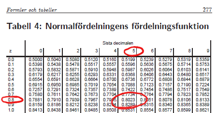

BI1363 HT 2020
Test av proportioner
Oktober 2020
Adam Flöhr, BT, SLU
Binära variabler

Förekomsten av egenskapen hos en individ är en binär variabel
Vi vill veta hur vanlig en viss egenskap är i en population (dess proportion \(p\))
Drar ett stickprov av storlek \(n\) och tittar på antalet i stickprovet som har egenskapen (positiva utfall)
Den naturliga skattningen av \(p\) är
\[\hat p = \frac{x}{n}\]
där \(x\) är antalet positiva utfall och \(n\) är stickprovets storlek
Fördelningen för \(x\) och \(\hat p\)
En observation ur populationen är positiv med sannolikheten \(p\) och negativ med sannolikheten \(1 - p\)
Antalet positiva utfall (\(x\)) bland \(n\) oberoende observationer är summan av \(n\) binära variabler
Antalet positiva utfall följer därmed en binomialfördelning med storlek \(n\) och sannolikhet \(p\)
\[X \sim Bin(n, p)\]
Eftersom antalet positiva utfall är binomialfördelat ges fördelningen för \(\hat p\) av en binomialfördelning skalad med n

Vi drar tio observationer ur en population där 40 procent har antikroppar mot en viss sjukdom
Antalet positiva följer en binomalfördelning med \(n=10\) och \(p = 0.4\)
Fördelningen för vår skattning av proportionen är en skalning av den binomialfördelningen
Normalapproximation av binomialfördelning
En binomialfördelning kan approximeras med en normalfördelning om \(n\) är stort och \(p\) nära \(0.5\)
Boken Biometri ger tumregeln att \(np\) och \(n(1-p)\) bägge ska vara större än 10
Den skalade binomialfördelningen för \(\hat p\) kan approximeras med en normal med \(\mu = p\) och \(\sigma^2 = \frac{p(1-p)}{n}\)

Fallet med \(n = 100\) och \(p = 0.4\)
Vi kan antingen basera vårt test på binomialfördelningen för \(x\) (\(Bin(100, 0.4)\)) eller på normalfördelningen för \(\hat p\) (\(N(0.4, 0.0024)\))
Variansen i normalfördelningen ges av \(\sigma^2 = \frac{p(1-p)}{n} = \frac{0.4 \cdot 0.6}{100} = 0.0024\)
z-test för proportion, ett stickprov, schema
Hypoteser
\(H_0: p = p_0\)
\(H_1: p \neq p_0\)
Testfunktion
\[z = \frac{\hat p - p_0}{\sqrt {\frac{p \cdot (1-p)}{n}}}\]
där \(\hat p\) skattas från stickprovet, och \(p_0\) hämtas från nollhypotesen
Testfördelning
Under nollhypotesen följer \(z\) (approximativt) en standardiserad normalfördelning \(N(0,1)\)
Approximationen är giltig om \(np_0 > 10\) och \(n(1 - p_0) > 10\)
P-värde

P-värdet ges av arean bortom \(|z|\) i testfördelningen
Detta kan hämtas ur en normalfördelningstabell (Biometri, tabell 4)
Svar
P-värdet ställs mot en förbestämd signifikansnivå (ofta 5 procent)
Vid ett lågt p-värde förkastas nollhypotesen
Vid ett högt p-värde förkastas ej nollhypotesen
Illustration av p-värdet


Testfunktionens värde \(z = -0.8452\) är på den standardiserade skalan
Svanssannolikheten kan beräknas genom att slå i en normalfördelningstabell
Tabellen ger sannolikheten \(0.8023\) (för \(z = 0.85\))
En svans motsvarar därmed \(1 - 0.8023 = 0.1977\)
Det tvåsidiga p-värdet ges av \(2 \cdot 0.1977 = 0.3954\)
Binomialtestet

Proportioner kan också testas genom binomialfördelningen
Antalet skadade växter är \(Bin(60, 0,3)\)
Vi observerar 15 skadade växter
Det ensidiga p-värdet (vid \(H_1: p < 0.3\)) är sannolikheten att få 15 eller färre skadade växter
Det tvåsidiga p-värdet (vid \(H_1: p \neq 0.3\)) är den summerade sannolikheten för utfall som är mindre sannolika än det observerade resultatet
Detta motsvarar alla staplar som är lägre än stapeln vid 15
Sannolikheterna kan beräknas i valfritt datorprogram, vilket ger \(0.2438\) respektive \(0.4816\)
Binomialtestet, schema
Hypoteser
\(H_0: p = p_0\)
\(H_1: p > p_0\) eller \(H_1: p < p_0\)
Testfunktion
\[x = \text{ antalet positiva utfall}\]
Testfördelning
Under nollhypotesen följer \(x\) en binomialfördelning med parameterar \(n\) och \(p_0\): \(Bin(n, p_0)\)
P-värde

P-värdet ges av summan av staplarna över eller lika med \(x\) i testfördelningen
Detta kan hämtas ur en binomialfördelningstabell (Biometri, tabell 2, för \(n \leq 20\))
Svar
P-värdet ställs mot en förbestämd signifikansnivå (ofta 5 procent)
Vid ett lågt p-värde förkastas nollhypotesen
Vid ett högt p-värde förkastas ej nollhypotesen
p-värde


p-värdet beräknas som sannolikheten för det observerade utfallet eller något mer extremt
I det här fallet sannolikheten att få \(12\) eller fler positiva utfall
Tabell 2 ger sannolikheten för värden mindre eller lika med värdet i vänstra kolumnen
Sannolikheten att få mindre än eller lika med 11 är \(0.9824\)
Sannolikheten att få mer eller lika med 12 är därmed \(1 - 0.9824 = 0.0176\)
Slutsats
Det finns en statistiskt säkerställd skillnad från \(0.5\)
Detta tyder på att sannolikheten att vinna är större om man går först
Bonusuppgift. Vid VM 2018 förlorade förstalaget samtliga av fyra straffläggningar. Är resultatet fortfarande signifikant om den datan tas med?
z-test för proportioner, två stickprov, schema
Hypoteser
\(H_0: p_1 = p_2\)
\(H_1: p_1 \neq p_2\)
Testfunktion
\(z = \frac{\hat p_1 - \hat p_2}{\sqrt {\hat p_0 (1-\hat p_0) (\frac{1}{n_1} + \frac{1}{n_2})}}\)
där \(\hat p_0 = \frac{n_1 \hat p_1 + n_2 \hat p_2}{n_1 + n_2}\)
och \(\hat p_1\) och \(\hat p_2\) skattas
Testfördelning
Under nollhypotesen följer \(z\) en standardiserad normalfördelning
Tumregel: \(n_1 \hat p_0, n_2 \hat p_0, n_1(1-\hat p_0)\) och \(n_2(1-\hat p_0)\) bör alla vara större än \(10\)
P-värde

P-värdet ges av arean bortom \(|z|\) i testfördelningen
Detta kan hämtas ur en normalfördelningstabell (Biometri, tabell 4)
Svar
P-värdet ställs mot en förbestämd signifikansnivå (ofta 5 procent)
Vid ett lågt p-värde förkastas nollhypotesen
Vid ett högt p-värde förkastas ej nollhypotesen
Testfördelning
Under nollhypotesen följer \(z\) en standardiserad normalfördelning \(N(0,1)\)
P-värde

p-värdet ges av arean under kruvan bortom \(z = 4.137\)
I det här fallet är den arean mycket liten
Normalfördelningstabellen (Biometri, tabell 4) ger att p-värdet i alla fall är mindre än \(0.001\)
Slutsats
Ett lågt p-värde ger att vi förkastar nollhypotesen
Det finns en statistiskt säkerställd skillnad mellan proportionerna sjuka träd